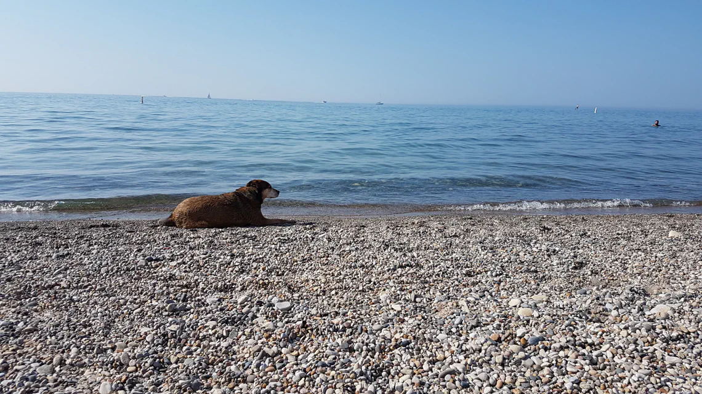

Rhineland Acid Mine Drainage — A Cohesive Explanation
Research Journal — Policy Memo
I. The environmental issue
With a population of 84.5 million citizens the country of
Germany has a substantial
demand for energy (German Federal Statistical Office, 2022).
Much of the electricity production
within the nation is through fossil fuels, with 20.1% of
power being produced through lignite
production (German Federal Statistical Office, 2023).
lignite—also referred to as brown coal—is
a low grade coal. It is inefficient and emits more CO2 when
compared to other types of fossil
fuels (University of Calgary, n.d.). Germany has had a long
standing dependance on lignite, with
it being used in place of wood as a fuel type beginning as
early as the 1600's (D-EITI, 2023). In
1985 Germany hit a historical record of extracting 433
million tonnes of lignite that year.
Lots of brown coal is mined throughout the country but one
region located primarily in
the middle of Germany is the Rhenish coalfields. These coal
fields are home to forests, towns,
and open-pit lignite mines among other things. Open-pit
lignite mining causes many
environmental changes, a specific one being the detrimental
effects on ground and drinking
water through Acid Mine Drainage (AMD). Through the mining
process water is contaminated
and released back into the surrounding environment which
then drains into groundwater stocks.
AMD is a geochemical flow which occurs when atmospheric
oxygen reacts with sulphuric
compounds unearthed during mining, producing acidic and
metal-rich runoff which can be
classified as grey water (Moncur, 2013). This process is an
externality of lignite mining. In the
Rhineland Coalfields the AMD is primarily caused by pyrite
oxidation products including Fe3+ & Fe2+
ions along with
acidic SO42- & H3O+
ions (Wisotzky,
2001). The process is closely related to
a positive feedback cycle wherein green water from
precipitation or blue water from returning
groundwater dissolve pyritic Fe3+, Fe2+,
SO42-, H3O+ ions
into the water lowering the pH
(Wisotzky, 2001). Then secondary minerals that are iron
sulphate containing also begin to enter
the water contributing to further contamination and
acidification exacerbating the problem. Once
this water has been contaminated it continues in its
geochemical flow back into the ground water
or streams where it can then mix with drinking water
supplies (Gerwin et al., 2023). The state of
the groundwater is often quite toxic, and in the mining
districts southern areas, the water is
extremely acidic, sometimes with a pH under 5 (Wisotzky,
2001). The process of AMD is a
common externality of lignite mining in the Rhineland
Coalfields and is detrimental to the
groundwater stocks of the region.
II. Root Cause of the Issue
The root cause of Acid Mine Drainage in the Rhineland
Coalfields is the creation and
exploitation of open-pit mines.
When

In order
Text
CHANGE ALT
CHANGE ALT